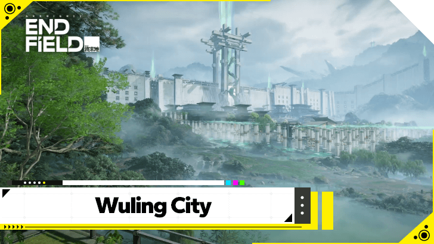
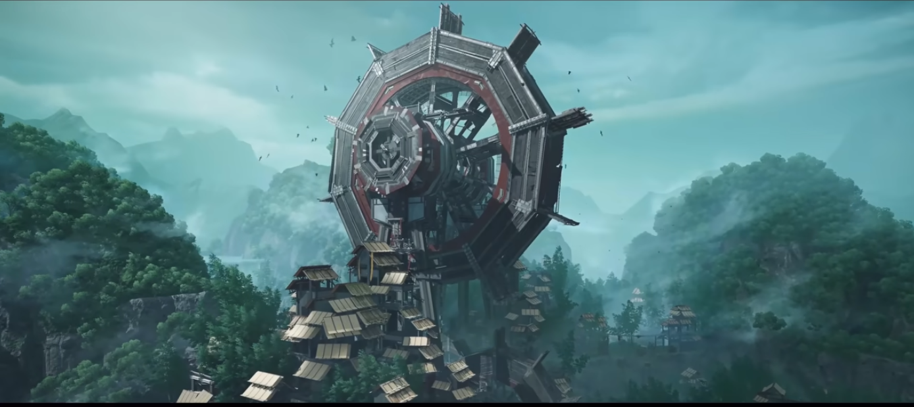
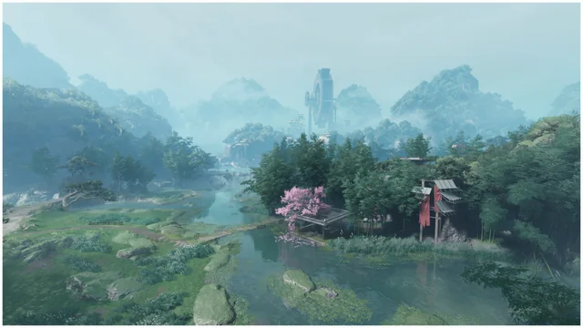

Cidade de Wuling
O centro urbano vibrante que serve como hub principal para os protocolos de colonização. Suas luzes neon contrastam com a arquitetura imponente e funcionalista.

Exploração Planetária: Talos-II
Uma região marcada por uma fusão única entre tecnologia industrial pesada e estética tradicional, Wuling é um dos pontos focais da administração da Endfield em Talos-II.
O centro urbano vibrante que serve como hub principal para os protocolos de colonização. Suas luzes neon contrastam com a arquitetura imponente e funcionalista.

Uma área periférica fortificada. A Paliçada de Qinqbo é essencial para a defesa contra as anomalias locais e serve como posto de observação estratégico.

Famoso por suas paisagens naturais de tirar o fôlego, o vale esconde segredos sobre a energia de Talos-II e os recursos necessários para a sobrevivência da Endfield.
